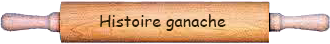

Qu'est-ce qu'une ganache traditionnelle ?La ganache sert de base à de nombreux desserts (bûches, truffes, macarons, verrines…). La ganache traditionnelle sert essentiellement à réaliser des truffes, des bonbons, et des décorations de gâteaux et de bûches. Quelle est la différence entre ganache et ganache montée ?La différence tient dans les proportions entre chocolat et crème. Les astuces pour rattraper une ganache montéeComment rattraper une ganache au chocolat trop liquide ? Si votre ganache est liquide, c’est que vous avez mis trop de crème par rapport au chocolat. Que faire si l’émulsion chocolat/crème ne prend pas ?Cela arrive si votre chocolat a trop chauffé : sa température ne doit pas excéder 55 degrés, aussi veillez à maintenir sa température à 35/40 degrés lors de l’émulsion.
|
| |
| |
|  |